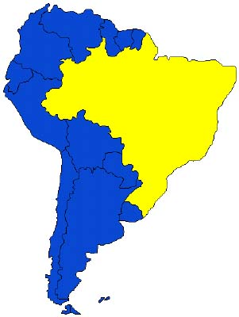

|
Jornal do C E U E Porto Alegre - maio de 2000 A Luta Mais Sentida Pelos Estudantes |
|
A matrícula realizada pelo CEUE foi o primeiro contato direto com os alunos da engenharia, todos puderam notar o trabalho e preocupação da nova gestão do CEUE. Enfrentamos as persistentes mazelas da matrícula e ajudamos na sua realização. Isto gerou reconhecimento por todos, estudantes e professores, de nossa forma séria e colaborativa de uma instituição de ensino superior realmente pública. Aliás, fato exposto e externado pelo professor Ronald (Congrad) no Conselho da Engenharia. É importante salientar que o CEUE foi o único centro acadêmico a realmente enfrentar o problema da recusa de matrícula diretamente. Teve-se alunos com suas recusas de matrículas decretadas. Destes, dois entra-ram no vestibular no primeiro semestre e dois no segundo, dois não compareceram para efetuar a matrícula. O CEUE encaminhou a um advogado, cinco alunos com recusa de matrícula, sendo dois que en-traram para o segundo semestre e três que não prestaram novo vestibular, uma matrícula já foi efetuada através de liminar ganha na Justiça, outras estão em andamento. O CEUE auxiliou na matrícula de um aluno convê-nio (estrangeiro), que não poderia efetua-la por ter rodado duas vezes em uma mesma disciplina, a ma-trícula foi efetuada por liminar conseguida na justiça. O CEUE conseguiu matricular um aluno da
enge-
Jornal do CEUE Nº2 Maio 2000
Gestão:
|
nharia que obteve aprovação no vestibular para livrar-se da recusa e que não pode comparecer ao dia de matrícula 01/03, perdendo o prazo. O CEUE representou o aluno perante o DECORDI e Pró-Reitoria de graduação e conseguiu a matrícula dentro do pra-zo legal 23/02 a 02/03. Começamos trabalho em conjunto com o DAECA, na oportunidade em que foi realizada pressão e reivindicação junto ao CONGRAD da Economia e a Pró-Reitoria de Graduação para garantir a normali-dade de sete disciplinas que estavam ameaçadas de cancelamento devido à falta de professores, sendo duas oferecidas a Engenharia, ECO02254 turmas (B e E), o que foi compensada pela manutenção das vagas para todos alunos matriculados nas disciplinas, dos quais 55 da Engenharia. No início deste primeiro trimestre tivemos de reorganizar minimamente as atividades administrativas e financeiras da entidade. Isto não prejudicou as atividades mencionadas acima, como também a recepção aos calouros, a entrega de um jornal que há muito se tinha perdido. Estamos aprofundando a democracia interna, chamando subcentros, associação de formandos. Também estamos presentes na construção de um processo participativo para entidade máxima em nossa Universidade, eleições que ocorrerão no final do mês de maio. Ainda, estamos introduzindo nos finais de tarde o projeto "QuintaCumbas" que será mais uma opção aos colegas nas nossas dependências. Por fim, este primeiro semestre não passou em branco. Estes foram em síntese apertada algumas e concretas atividades que participamos. Queremos dar uma salto de qualidade já para o segundo trimes-tre, melhorando a participação da Diretoria e do res-tantes dos estudantes. Há muito para se realizar. Agenda de seminários, eventos de entretenimento, atividades de defesa da Universidade Pública, manutenção deste jornal, luta por uma sociedade mais justa, elaboração de atividades de extensão, torneios de eventos esportivos, bem como outros. Por isso queremos a participação de todos os alunos da engenharia, pois o CEUE, somos todos nós, e só conseguiremos vitórias se todos juntos lutarmos com os mesmos objetivos. Participe do CEUE traga sugestões e problemas que juntos podemos construir nosso CEUE para todos, forte, combativo e de luta. |
|
 O CEUE - Gestão Chega! Tecnologia para todos, no
intuito de promover atividades que visam enriquecer o
debate sobre temas fundamentais para formação crítica do
engenheiro, realizou no dia 15 de março uma palestra com o Vice
- Presidente do CREA-RS Eng. Ubirajara Martins Flores, com
o tema: As Conseqüências da globalização e do
"neoliberalismo" no exercício da profissão do
engenheiro.
O principal assunto da palestra foi a regulamentação
da profissão do engenheiro nos países do MERCOSUL
(Brasil, Argentina, Uruguai e Paraguai), o qual levantou as
seguintes dúvidas: O MERCOSUL é solução para a crise de
desemprego dos profissionais da engenharia? Existirá um novo mercado
de trabalho para os profissionais que se formam na
universidade? Conseguirão estes profissionais formados nas
universidades brasileiras ingressar no mercado de trabalho
dos países que compõem o MERCOSUL ou no
mercado de trabalho dos Estados Unidos e Europa com a abertura de
mercado promovida pela globalização?
De acordo com o que foi dissertado na palestra, o maior mercado de
trabalho nos países que compõem o
MERCOSUL é o Brasil (o maior mercado e maior
pólo industrial). Um dado elucidativo disto, é
que cerca de 67% do PIB total dos países
constituintes do MERCOSUL é brasileiro e
29% é argentino.
E dentro deste realidade, se
constata que o mercado de trabalho nacional
está saturado. Logo, em que país a
situação melhorará? Como se conseguirá
buscar novos locais de exportação para
países com reduzida possibilidade de
absorção de mercadoria e de serviços?
No CREA-RS existem 50 mil
profissionais registrados e somente 29 mil pagam a anuidade e exercem a profissão regularmente. É
evidente que temos um excessivo número de profissionais
formados que não exercem a profissão. Através do dado acima,
observamos que a abertura de novos daqueles mercados
acima referidos é insuficiente para solucionar o problema de
desemprego dos profissionais de engenharia.
Ainda que se consiga ultrapassar este tópico da
realidade _ limitada atividade de produção e absorção dos
países do Mercosul - com a suposta abertura de novos
mercados, como se dará a circulação de profissionais de um país
para outro?
|
Como pode ser comprovado que um estrangeiro tenha condições de exercer a profissão de engenheiro no Brasil, ou de um brasileiro exercer a profissão em outros países? Dos países do MERCOSUL, somente o Brasil possui organismos, como o CREA, de regulamentação da profissão. Para uma pessoa exercer a profissão de engenheiro, necessita uma formação curricular com determinadas exigências para atuar nesta profissão em território nacional. Na Argentina, por exemplo, existem federações regionalizadas extremamente corporativas, buscando defender interesses locais próprios. No Paraguai estão se formando dois conselhos normativos (ainda incipiente) e no Uruguai não existe conselho normativo. É claro que a formação curricular e o nível de exigência em cada país são diferentes. A conclusão disto é: como haverá abertura de fronteiras para circulação de profissionais sem levar em consideração as características e diferenças regionais de cada país? As normas técnicas serão niveladas por cima ou por baixo, em relação ao seu grau de exigência? Um profissional brasileiro terá inúmeras dificuldades para conseguir empregos nos outros países do MERCOSUL, visto que este novo mercado é escasso, somando-se as inúmeras dificuldades para regulamentar a profissão nestes países. Terá ainda, dificuldades para regulamentar sua profissão na Argentina, devido à proteção da federação local. No Uruguai por exemplo, o processo de regulamentação é burocrático (quase impossível devido à demora do processo dentro das universidades locais). Um exemplo característico é a contratação de engenheiro agrônomo na fronteira como trabalhador rural no Uruguai, recebendo salário de trabalhador rural, sendo após extraditado, sem qualquer direto trabalhista e impossibilitado de recorrer judicialmente. No Brasil, a contratação de estrangeiros pode ser feita em regime temporário, passando pelo Ministério do Trabalho, sem passar em nenhum momento pelo organismo responsável de regulamentação da profissão. Somente os profissionais em contrato de regime permanente passam pela vistoria e aprovação do CREA. Acrescente-se a isto as conseqüências da globalização e do "neoliberalismo" em nosso pais. Vejamos alguns trechos do livro "O MERCOSUL no Contexto da Integração Continental", distribuído para os alunos que compareceram na palestra e disponível no CEUE. Capítulo I, Integração Regional e MERCOSUL, Pág.
21: "Na integração há muitas contradições. Os
aspectos econômicos entram em contradição com o conjunto dos
demais interesses. Um exemplo é a questão do desemprego na União Européia; desde a 2( guerra mundial não havia
desemprego significativo - O Plano Marshall havia trazido fluxo de capitais de 1945 a 1995.
| |||
|
No entanto, no período de 1972 a 1994 os dados de desemprego pularam de 2,8% para 12% na França; de 4% para 10,4% na Inglaterra; de 0,8% para 8,8% na Alemanha; e de 3,1% para 22% na Espanha. A curva de desemprego é crescente nos países da Europa, com variações no percurso sempre ascendente". Capítulo II, Os profissionais brasileiros e o mercado de trabalho em nosso país, páginas 34 e 35: "Agora, por exemplo, numa conjuntura de desemprego, a chamada terceirização dos serviços, exige a inserção no mercado como pequeno empresário ou como autônomo, para sobreviver à perda do emprego ou continuar no mesmo. Sabemos que muitas vezes esta nova inserção pode se dar fora da profissão - um engenheiro mecânico que abre uma lanchonete - mas não sabemos as proporções entre os que abdicam do exercício profissional, aqueles que ampliam o campo do exercício para além do convencionado ou aqueles que se mantém nas atribuições já reconhecidas e aceitas como sendo daquelas determinada profissão". Quanto às mudanças estruturais no exercício destas profissões, temos como exemplo o fato do engenheiro - profissional preparado para a produção, ocupar cada vez mais espaços de gerência administrativa, provocando, inclusive algum incômodo entre os profissionais administradores de empresas. Esta relocalização do engenheiro - da produção para a administração - pode ser uma mudança no exercício da profissão com o alargamento do conceito de engenharia de produção ou uma adequação à conjuntura de falta de postos de trabalho na produção. Precisamos deixar bem claro o que é a política "neoliberal". Aliás, escrevemos este termo entre aspas, pois de novo não possui nada. Fundamentalmente é a mesma política que do século XVI ao século XX colonizou, escravizou e matou negros na África, assassinou civilizações indígenas na América e sugou as riquezas naturais destes países. Esta política nos dias atuais busca a "abertura" de mercado para aliviar as crises de superprodução dos países capitalistas centrais, vendendo para os países subdesenvolvidos seus pacotes tecnológicos obsoletos. Apropriando-se dos setores fundamentais para desenvolvimento soberano nestes países, das empresas de energia, telecomunicações, das indústrias farmacêuticas, dos recursos naturais (minas, Amazônia), das patentes, ou seja, da utilização e do controle do Estado, sendo que os países e governos que não se submetem a esta lógica, estão sujeitos a invasão armada do seu território. |
Conseqüentemente, para diminuir a crise de desemprego destes países, certamente o fluxo de profissionais se dá de cima para baixo, dos países capitalistas centrais para os subdesenvolvidos. Uma prova concreta deste fato está nas empresas privatizadas, como às de telecomunicações. Os profissionais de engenharia estrangeiros são contratados com outra denominação - "agentes operacionais" - atuam como engenheiros tirando o mercado de trabalho dos profissionais nacionais. Certamente, organismos que regulamentam a profissão, como o CREA, organizações que defendem os trabalhadores como os sindicatos, a própria universidade pública são empecilhos para a implantação desta política. Por tudo isso, quem discursa que a globalização e o "neoliberalismo" serão solução para os problemas sociais, como o desemprego, deve fazer uma profunda reflexão e mudar o discurso, pois este não cola mais. Também deve mudar o discurso àqueles que pregam a falácia que o engenheiro deve ter o chamado "espírito empreendedor", que será um futuro empresário. Primeiro, dificilmente será um empresário, pois não possui os meios de produção (local, maquinaria, tecnologia) necessários, e é difícil imaginar todos os engenheiros formados no país como empresário (haja empresa!). Segundo, mesmo que ele se torne um microempresário ou profissional autônomo, não consegue pagar seus impostos e nem a anuidade para regulamentar a profissão. Então devemos ter uma posição crítica perante estas argumentações. Até é interessante ver no dicionário o significa engenharia: "Aplicação de conhecimentos científicos e empíricos, e certas habilitações específicas à criação de estruturas, dispositivos e processos para converter recursos naturais em formas adequadas ao atendimento das necessidades humanas". O engenheiro é quem pratica esta arte. Um comentário interessante da palestra foi: "É inadmissível que exista no Brasil problemas de moradia popular com a quantidade de engenheiros formados que não ingressam no mercado de trabalho". Então é fundamental que todos os estudantes defendam a universidade perante a implantação do processo de desmonte promovido pela política "neoliberal", e que transformamos ela para que esta use seus recursos na solução dos graves problemas sociais (doença, fome, miséria, atraso tecnológico), permitindo desta forma que a totalidade dos jovens tenham condições de ingressar em uma universidade. Ou vamos simplesmente aceitar que a grande parte dos jovens sejam condenados à ignorância, à marginalidade, sem possibilidade de acesso ao ensino, ao conhecimento universitário e impossibilitado de desenvolver a sua capacidade criativa, sendo atirados na lixeira como acontece na América Latina, África e outras partes do mundo, para simplesmente atender os interesses explorativos e de sede de lucro de grupos empresariais minoritários, mas que detém a propriedade de 99% da riqueza mundial? É claro que não! | ||||
|
Agentes Transformadores da Realidade
Ultimamente , tenho escutado um
zum-zum de que, para nos darmos bem, temos que ir "pra fora",
ir para o 1º mundo e ganhar uma grana!
Bom! Não discordo de que todos precisamos de dinheiro
para sobreviver. Mas, o que mais me chama atenção,
é que as pessoas que estão nessa "onda"
são aquelasque tem a melhor índole. Se as
"melhores cabeças"estão deixando nossa terra, quais
ficarão??? Quem vai assumir o controle??? Será
que fugir do problema é a solução??? Será que
eles descobriram um Brasil que, nós tupiniquins,
ainda desconhecemos???
Eu tenho certeza que, se atingirmos um nível
de consciência coletiva em que é possível mudar a
realidade sócio-economica ,ela mudará
naturalmente, (para isso é necessário de que cada um de nós
tenha conhecimento e assuma seu papel). Não
fique aí parado, criticando os outros e esperando que
alguém faça o que cabe a você fazer.
Cabe a nós Engenheiros, agentes
transformadores da realidade, instrumentalizar as mudanças
necessárias a fim de construirmos uma realidade
que oportunize o desenvolvimento das pessoas e,
por consequência, da sociedade em que vivemos.
"Liberdade não se ganha e não se perde,
se conquista". Veja: CURTO-CIRCUITO
- Eleições para SubCentros e
Representações Discentes / Inscrições no comercial do
CEUE até 07/06/00 - Eleição dia 15 e 16/06/00.
- PALESTRA: Potencial Energético
do Estado Secretária de Minas, Energia e Comunicação do Estado,
Dilma Roussef - dia 31/05/00, às 18h,
local a confirmar.
- QUINTACUMBAS - Venha beber quentão,
conversar, se divertir e dançar, todas as quintas,
a partir das 18h, nas Catacumbas do CEUE.
- ELEIÇÕES PARA O DCE - dias 29,
30 e 31 de maio/00.
- COMERCIAL - Novas pastas do CEUE.
- CEUE NA INTERNET - Venha navegar na nova página do CEUE
na Internet - endereço: www.ufrgs.br/ceue.
RESTAURANDO NOSSO ESPAÇO -
Todos que freqüentam a sala de estudos e o
primeiro andar, em geral, concordam com o
péssimo estado de conservação em que este se
encontra. Deixado de lado pelas autoridades e pelos
próprios alunos, o piso está num estado
decadente, devido aos anos que já possui e à atividade
operária dos cupins que habitam o nosso centro.
O CEUE está organizando uma campanha
para arrecadar fundos e conseguir tirar do papel o
projeto que prevê a reforma do assoalho. Para
tanto, pedimos aos colegas que colaborem trazendo
papéis, jornais, latas, garrafas plásticas, vidros,
etc, e entreguem no Comercial ou na diretoria. Com
a ajuda de todos, conseguiremos restaurar nosso espaço, sem precisar entregá-lo a outras
instituições!
| ||||||||||||